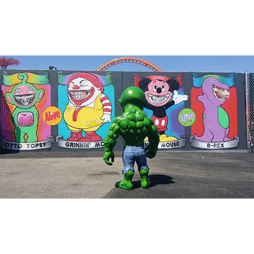

Coney Island, 2015
Ron English’s “Grinnin’ McB” mural for the inaugural season of Coney Art Walls in Brooklyn, New York.

Work details
Description
For the inaugural season of Coney Art Walls, Ron English contributed a full-wall Grinnin’ McB mural that became one of the site’s best-known works. The image merges fast-food iconography with skeletal grin imagery, scaling English’s satirical visual language to the spectacle and public energy of Coney Island.
Gallery